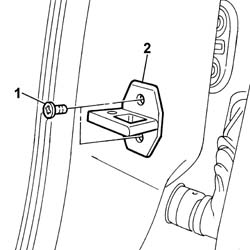
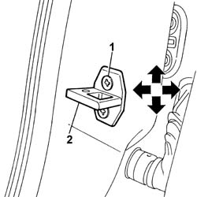

7005B14 front side door catch striker r r
- Path
- Procedures > 70 FITTINGS > 7005 PASSENGER COMPARTMENT FRONT SIDE DOORS > 7005B front door mechanical locks > 7005B14 front side door catch striker r r
- Kind
- repair procedure (removal / refitting; the operation number is the code)
- Applies to
- all engines; all production periods
- Interactive page
- https://sloeber94.github.io/elrnDB-fPnd/en/#/2753035
Applies to: all engines; all production periods
 Removing
Removing
 Refitting
Refitting1. Undo the retaining bolts.
2. Remove the striker.

Applies to: all engines; all production periods
Refitting
RemovingCheck that the striker is undamaged.
Fit the striker.
1. Screw in the retaining bolts without tightening.
2. Use the bolt slots to move the striker into the correct position.

Applies to: all engines; all production periods
Close the door and check that the striker and door lock are correctly matched and aligned when the door is shut.
Tighten the striker bolts to the specified torque.
 | Fastening | Component | Ø | Value (daNm) |
|---|---|---|---|---|
- | Bolt | STRIKER ON FRONT SIDE DOOR PILLAR | M8 | 2.4 |